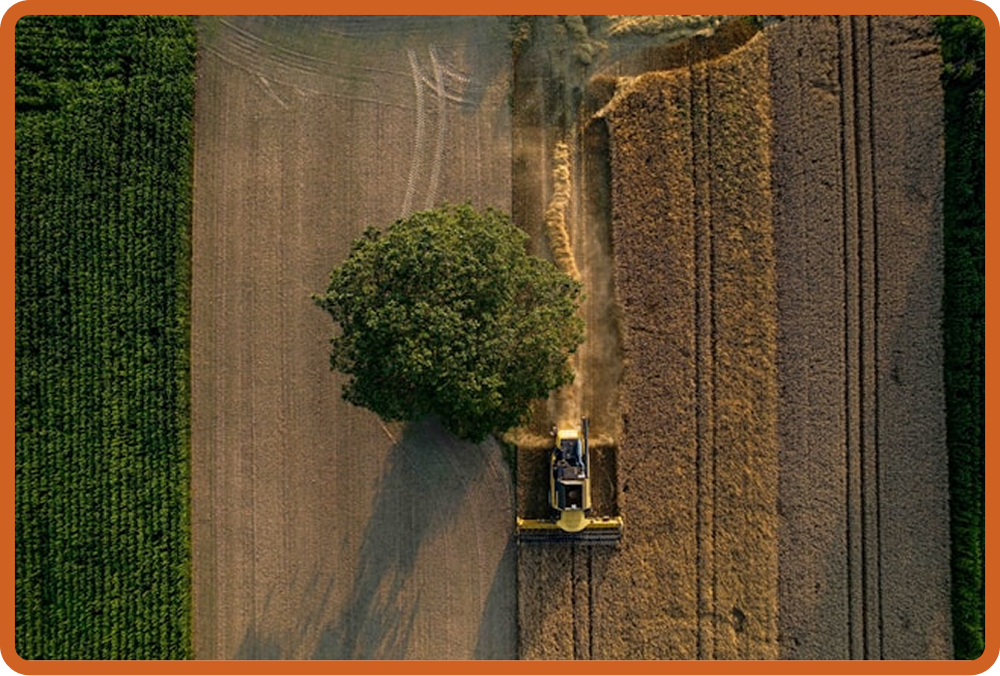
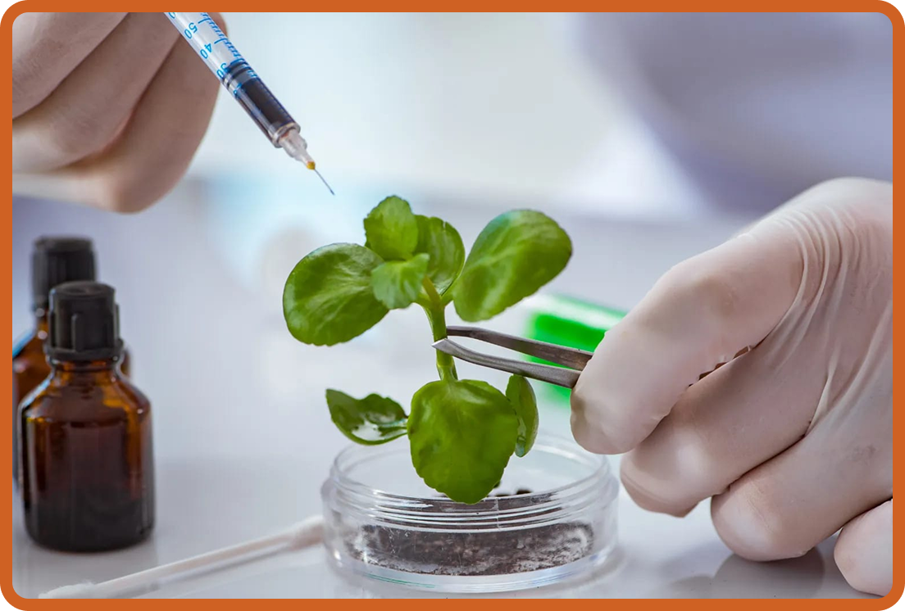

O Uso da Tecnologia na Produção de Alimentos para Grandes Populações
Com o crescimento da população mundial, tornou-se cada vez mais importante encontrar maneiras eficientes de produzir, armazenar e distribuir alimentos em grandes quantidades. A tecnologia possui um papel fundamental nesse processo, pois permite aumentar a produtividade do campo, reduzir desperdícios, melhorar a qualidade dos alimentos e utilizar os recursos naturais de maneira mais eficiente. Atualmente, a produção de alimentos envolve diversas tecnologias, desde máquinas agrícolas modernas até sistemas de irrigação, biotecnologia, inteligência artificial e técnicas avançadas de conservação.

Tecnologia no campo
-
Uma das principais aplicações da tecnologia na produção de alimentos está na agricultura. Antigamente, grande parte do trabalho agrícola dependia da força humana e de ferramentas simples. Atualmente, máquinas como tratores, colheitadeiras, plantadeiras e pulverizadores permitem realizar grandes quantidades de trabalho em menos tempo e com maior precisão. Além das máquinas, existem tecnologias que ajudam os agricultores a tomar decisões mais eficientes.
-
Sensores, satélites, drones e sistemas de GPS podem ser utilizados para acompanhar as condições das plantações e detectar problemas como pragas e doenças. Esse conjunto de técnicas é conhecido como agricultura de precisão. Isso permite que os recursos sejam utilizados de acordo com as necessidades de cada área da plantação. Dessa maneira, é possível aumentar a produtividade e, ao mesmo tempo, diminuir desperdícios.

Biotecnologia e melhoramento das plantas
-
A biotecnologia também possui grande importância na produção de alimentos. Por meio de técnicas científicas, pesquisadores podem estudar as características das plantas e desenvolver variedades com características desejáveis, como maior resistência a determinadas doenças e pragas, melhor adaptação a diferentes condições ambientais ou maior produtividade.
-
O melhoramento genético tradicional é utilizado há muito tempo na agricultura. Mais recentemente, técnicas modernas de biotecnologia passaram a permitir estudos mais específicos sobre os genes responsáveis por determinadas características.
-
Os organismos geneticamente modificados, conhecidos como *OGMs*, são um exemplo dessa aplicação. Algumas plantas geneticamente modificadas foram desenvolvidas para apresentar características que podem facilitar sua produção agrícola. Entretanto, o uso dessas tecnologias deve ser acompanhado de pesquisas científicas, regulamentação e avaliação dos possíveis impactos ambientais e alimentares.
Automação e robótica
-
A automação vem transformando diversas etapas da produção de alimentos. Máquinas automatizadas podem realizar tarefas como plantar, colher, classificar e transportar produtos agrícolas. A robótica também vem sendo pesquisada para realizar tarefas agrícolas que exigem grande quantidade de mão de obra. Em algumas situações, robôs podem auxiliar na colheita, na identificação de frutos maduros e no controle de plantas invasoras.
-

Inteligência artificial e análise de dados
A inteligência artificial (IA) é outra tecnologia que pode contribuir para a produção de alimentos. Grandes quantidades de dados podem ser analisadas para ajudar produtores a compreender melhor as condições de suas plantações. Com informações obtidas por sensores, satélites, drones e estações meteorológicas, sistemas computacionais podem auxiliar na previsão de condições climáticas, identificação de possíveis problemas nas plantações e planejamento de atividades agrícolas. A inteligência artificial também pode contribuir para reduzir desperdícios. Ao analisar dados sobre produção, consumo e transporte, empresas podem planejar melhor a quantidade de alimentos produzidos e a distribuição para diferentes regiões.

Tecnologia e sustentabilidade
A tecnologia não deve ser utilizada apenas para produzir mais alimentos, mas também para produzir de maneira mais sustentável. A agricultura precisa atender às necessidades de uma população crescente sem provocar impactos ambientais desnecessários. O uso eficiente de água, energia e fertilizantes, por exemplo, pode diminuir o desperdício de recursos. Fontes de energia renovável, como a solar, também podem ser utilizadas em determinadas atividades agrícolas e industriais. Tecnologias de agricultura de precisão podem contribuir para reduzir o uso excessivo de alguns insumos, enquanto sistemas de reaproveitamento podem transformar resíduos agrícolas e alimentares em novos produtos, compostagem ou fontes de energia.
-
A tecnologia sozinha não resolve todos os problemas relacionados à alimentação. Também são necessários investimentos em infraestrutura, educação, pesquisa científica, políticas públicas, preservação ambiental e distribuição adequada dos alimentos.
-
Produzir alimentos para grandes populações significa, portanto, muito mais do que simplesmente aumentar a quantidade produzida. É necessário desenvolver um sistema capaz de produzir, conservar, transportar e distribuir alimentos com qualidade, segurança e menor desperdício.